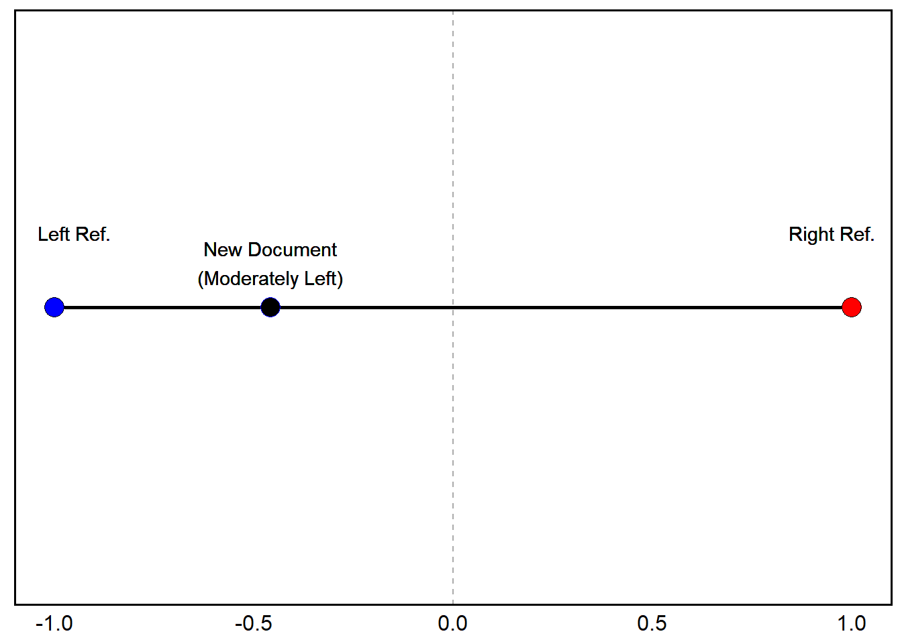
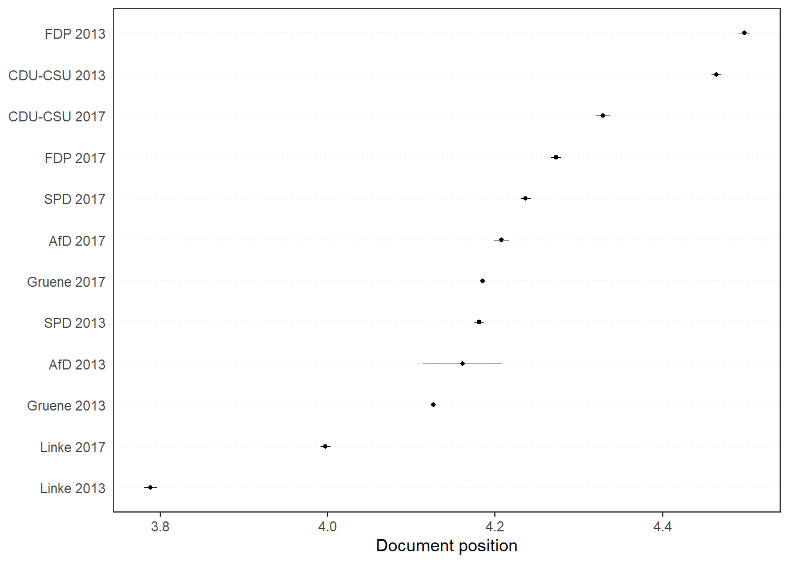

Although probably (maybe?) not the first methodology for scaling
ideology from texts, Wordscores – introduced by Laver,
Benoit, and Garry (2003) – was the first to gain significant traction
among political scientists. In a roundabout way, the methodology is a
Naive Bayes–like generative model whose output is converted into a
continuous ideological score rather than a class prediction. In essence,
it’s effectively (sort of) Naive Bayes + Value Projection onto a
Reference Scale + Rescaling.
Recall that for a standard (multinomial) Naive Bayes classifier, we first estimate how likely each word is to appear in each class \(p(w|k)\). Then, for a new document (\(D_{i}\)), we use those learned word probabilities to calculate \(\pi_{ik}\) – the probability that \(D_{i}\) belongs to each possible class \(p(k\mid D_{i})\). The result is a classification assigned to the document because it has the highest probability.
What Wordscores does instead is that after estimating
how likely it is that each word belongs to a reference document (\(p(w\mid r)\)) – e.g., a pair of left and
right-aligned documents, we then calculate the expected ideological
position of each word:
\[ S_{w} = \sum_{r}p(r\mid w)A_{r} \]
Where \(A_{r}\) is the ideological score of the reference text \(r\). Rather than a categorical classification, the result is now a continuous ideological location. New documents \(v\) are finally rescaled to account for weighted averages of word scores – such that a document’s position is the average ideology of the words it uses (from the reference documents) and weighted by the word frequences:
\[ S_{v} = \sum_{w}p(w\mid v)S_{w} \]
Let’s imagine we have two reference texts \(r\) – where \(A_{r}\) is Left Party (-1) versus Right Party (+1) to represent the polarity of their ideologies. The two reference documents produce these word frequences:
| Word | Left Ref. | Right Ref. | TOTAL |
|---|---|---|---|
| welfare | 8 | 1 | 9 |
| tax | 2 | 6 | 8 |
| military | 1 | 7 | 8 |
| TOTAL | 11 | 14 | 25 |
Similar to Naive Bayes, we’re going to compute the word probabilities for each of the polarities in the reference documents (classes):
welfare (9)
\[p(\text{left}\mid \text{welfare}) = \frac{8}{9} = 0.889 \quad p(\text{right}\mid \text{welfare}) = \frac{1}{9} = 0.111 \] tax (8) \[p(\text{left}\mid \text{tax}) = \frac{2}{8} = 0.25 \quad p(\text{right}\mid \text{tax}) = \frac{2}{8} = 0.75 \] military (8) \[p(\text{left}\mid \text{military}) = \frac{1}{8} = 0.125 \quad p(\text{right}\mid \text{military}) = \frac{7}{8} = 0.875 \]
Now we can compute the word scores using \(S_{w} = \sum_{r}p(r\mid w)A_{r}\):
\[S_{\text{welfare}} = 0.889(-1_{Neg}) + 0.111(1_{Pos}) = -0.778 \] \[S_{\text{tax}} = 0.25(-1_{Neg}) + 0.75(1_{Pos}) = 0.50 \]
\[S_{\text{military}} = 0.125(-1_{Neg}) + 0.875(1_{Pos}) = 0.75 \]
We now have all the prior probabilities we need to start computing document scores for new documents (\(v\)). Suppose a new document contains the following: Welfare (3), Tax (1), and Military (0). From this, we know that \(p(\text{welfare}\mid v) = \frac{3}{4} = 0.75\), and \(p(\text{tax}\mid v) = \frac{1}{4} = 0.25\).
To compute the document score using \(S_{v} = \sum_{w}p(w\mid v)S_{w}\), we just plug in our new values and known probabilities from the reference documents:
\[ S_{v} = 0.75(-0.778) + 0.25(0.5) = (-0.458)\]

A_r <- c(left = -1, right = 1) # Reference Ideologies
reference <- data.frame(word = c('welfare', 'tax', 'military'),
left = c(8, 2, 1),
right = c(1, 6, 7)) # Reference Documents
reference <- reference %>%
mutate(p_left = reference$left/(reference$left + reference$right),
p_right = reference$right/(reference$right + reference$left),
p_left = round(p_left, 3),
p_right = round(p_right, 3)) # Assign P(r|w)
reference$S_w <- reference$p_left * A_r["left"] + reference$p_right * A_r["right"] # Calculate Word Scores
stargazer::stargazer(tibble(reference), summary = F, type = 'text')##
## ===========================================
## word left right p_left p_right S_w
## -------------------------------------------
## 1 welfare 8 1 0.889 0.111 -0.778
## 2 tax 2 6 0.25 0.75 0.5
## 3 military 1 7 0.125 0.875 0.75
## -------------------------------------------new_document <- c(welfare = 3,
tax = 1,
military = 0) # New Document
new_document_total <- sum(new_document) # New Document Total Words
p_w_v = new_document/new_document_total # Prob. of Word from New Document
sum(p_w_v * reference$S_w) # Calculate Document Scores## [1] -0.4585library(quanteda) # Load Quanteda
texts <- c(left_ref = paste(c(rep('welfare', 8), rep('tax', 2), 'military'), collapse = " "),
right_ref = paste(c('welfare', rep('tax', 6), rep('military', 7)), collapse = " "),
new_doc = paste(c(rep('welfare', 3), 'tax'), collapse = " "))
dfm <- quanteda::dfm(quanteda::tokens(quanteda::corpus(texts))) # Create DFM from Tokenized Corpus
dfm## Document-feature matrix of: 3 documents, 3 features (11.11% sparse) and 0 docvars.
## features
## docs welfare tax military
## left_ref 8 2 1
## right_ref 1 6 7
## new_doc 3 1 0reference_scores <- c(-1, 1, NA) # Set Reference Scores
wordscores_model <- textmodel_wordscores(dfm, y = reference_scores) # Run Wordscores Model
predict(wordscores_model, rescaling = "lbg") # Predict (Lavar, Benoit, and Garry Rescaling Method)## left_ref right_ref new_doc
## -0.9174137 1.4594127 -1.0567889# Results Going to be a Bit Different Than Manual -- Rescaling with Small Corpora Tend to Stretch Scores, Often Overshooting Original Reference Anchors. Adding More Documents Will Improve Stability of Reference Anchors corp_ger <- get(load('../data/german_manifestos.rdata')) # Load German Manifestos Corpus
corp_ger## Corpus consisting of 12 documents and 3 docvars.
## AfD 2013 :
## "Alternative für Deutschland Wahlprogramm Währungspolitik - W..."
##
## CDU-CSU 2013 :
## "Gemeinsam erfolgreich für Deutschland. Regierungsprogramm 20..."
##
## FDP 2013 :
## "Bürgerprogramm 2013 Damit Deutschland stark bleibt. Damit D..."
##
## Gruene 2013 :
## "ZEIT FÜR DEN GRÜNEN WANDEL TEILHABEN. EINMISCHEN. ZUKUNFT SC..."
##
## Linke 2013 :
## "100% SOZIAL Die Linke. Wahlprogramm zur Bundestagswahl 2013 ..."
##
## SPD 2013 :
## "DAS WIR ENTSCHEIDET. Das Regierungsprogramm 2013 - 2017 Bürg..."
##
## [ reached max_ndoc ... 6 more documents ]dfm_ger <- quanteda::dfm(quanteda::tokens(corp_ger, remove_punct = T)) %>% # DFM from Tokenized Corpus
dfm_remove(pattern = stopwords("de")) # Remove German Stopwords
wordscores_german <- textmodel_wordscores(dfm_ger,
y = corp_ger$ref_score,
smooth = 1) # Apply Wordscors
summary(wordscores_german)##
## Call:
## textmodel_wordscores.dfm(x = dfm_ger, y = corp_ger$ref_score,
## smooth = 1)
##
## Reference Document Statistics:
## score total min max mean median
## AfD 2013 NA 455 0 23 0.01121 0
## CDU-CSU 2013 5.92 23054 0 245 0.56789 0
## FDP 2013 6.53 20593 0 187 0.50727 0
## Gruene 2013 3.61 45751 0 398 1.12698 0
## Linke 2013 1.23 21001 0 234 0.51732 0
## SPD 2013 3.76 23142 0 214 0.57006 0
## AfD 2017 NA 9850 0 108 0.24263 0
## CDU-CSU 2017 NA 10711 0 136 0.26384 0
## FDP 2017 NA 19292 0 261 0.47522 0
## Gruene 2017 NA 40689 0 1100 1.00229 0
## Linke 2017 NA 33246 0 788 0.81895 0
## SPD 2017 NA 20768 0 186 0.51158 0
##
## Wordscores:
## (showing first 30 elements)
## alternative deutschland wahlprogramm
## 3.290 4.742 3.296
## währungspolitik fordern geordnete
## 4.531 3.255 4.242
## auflösung euro-währungsgebietes braucht
## 3.336 4.242 4.155
## euro ländern schadet
## 3.333 4.228 3.912
## wiedereinführung nationaler währungen
## 4.466 4.579 4.242
## schaffung kleinerer stabilerer
## 4.290 4.427 4.242
## währungsverbünde dm darf
## 4.242 4.242 3.871
## tabu änderung europäischen
## 4.159 4.227 4.360
## verträge staat ausscheiden
## 3.553 4.794 3.698
## ermöglichen volk demokratisch
## 4.356 4.242 2.271pred_ws <- predict(wordscores_german, se.fit = TRUE, newdata = dfm_ger) # Predict Scores from Unseen
quanteda.textplots::textplot_scale1d(pred_ws) # Quanteda Built-In Function